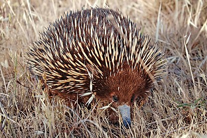

Ехидновые[1] (лат. Tachyglossidae) — семейство млекопитающих из отряда однопроходных. Семейство содержит три рода, из них один вымерший. Современный ареал семейства включает: Австралию, Новую Гвинею и острова в проливе Басса.
Анализ полных геномов показывает, что предки яйцекладущих млекопитающих отделились от предков плацентарных и сумчатых примерно 187 млн лет назад, а предки утконосовых и ехидновых разделились 55 млн лет назад[2]./p>
Название данного млекопитающего восходит к др.-греч. ἔχιδνα — «змея»[3].
Ехидны похожи на ежей или небольших дикобразов, так как покрыты грубой шерстью и иголками; кроме того, они, подобно ежам, могут при опасности сворачиваться в шар. Максимальная длина тела составляет приблизительно 30 см. Масса варьирует в пределах двух-трёх килограммов[4].
Голова маленькая и узкая, завершается клювом-хоботом, достигающим 7,5 см. У ехидны нет зубов, рот маленький. Основу рациона составляют термиты и муравьи, которых ехидны ловят своим длинным клейким языком, а также другие некрупные беспозвоночные, которых ехидны раздавливают во рту, прижимая языком к нёбу[4].
Соколов В. Е. Пятиязычный словарь названий животных. Латинский, русский, английский, немецкий, французский. 5391 назв. Млекопитающие. — М.: Русский язык, 1984. — С. 9. — 10 000 экз. — ISBN 5-200-00232-X.
